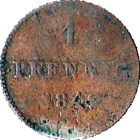
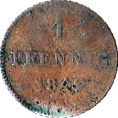
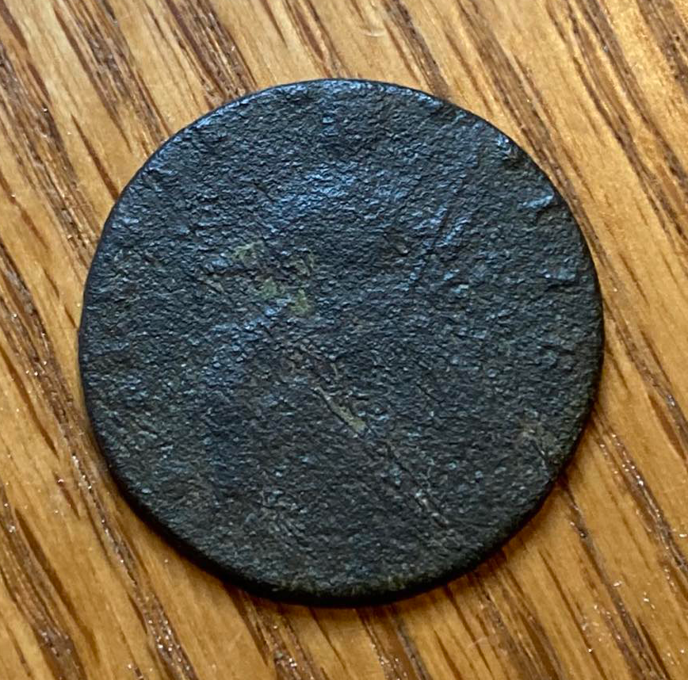
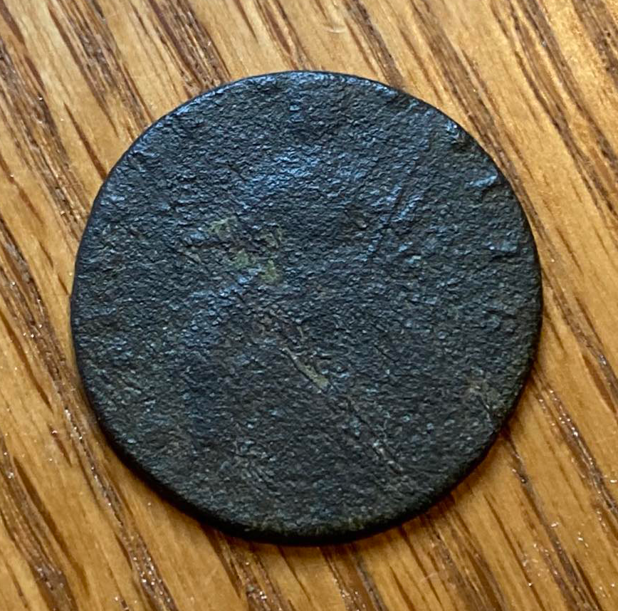

I started metal detecting in 2018 with the Garrett Ace 400. Not too long after that I upgrade to the Equinox 600. I upgraded again to the Equinox 900 this past Decemeber 2022. I now have the Manticore and am looking to sell my Equinox 900. Below is a gallery of the best stuff I've found.
read more...
I've been detecting since 2017 and I finally found another bucketlister in 2023 - a real! Pirate treasure!
read more...
Circa 1700s. This is by far one of my most favorite finds. I found it on an old cart path in the woods in my neighborhood. To not only to pull silver out of the hole, but silver that is 300 years old, and etched by hand! Truly amazing. Another cool story regarding this, fastforward 4 years later on the exact day, 12-29-22, StefDigs was detecting in a different area of the same woods and found the exact same thing! Hers is slightly larger, and bent, but exact same design.
read more...
Pewter button with drilled shank, worn down. This was found on the same cart path just several feet away from the silver cufflink.
Recovered 12-29-18; Hebron, CT
read more...
I had given up for the day and was headed back to my car. Right before I reached my destination this whopping signal jumped out at me. Great way to end the day!
Recovered in Hebron, CT

read more...
I found this smack in the middle of the backyard of a 1732 house in CT.
read more...
This is by far one of my favorite finds, because I've always loved skeleton keys. So this really meant something to me to find. It's my only one so far.
This is the key I used to make the logo for my wood turning page TurnKey Wood Crafts.
Recovered in CT.
read more...
This was the only thing I found this day. A loud 25 on the Equinox 600. It took me awhile, digging through roots and rocks. I'm lucky I didn't smash it, the way I was banging in the hole.
Recovered in Hebron, CT
read more...
My second silver cufflink, found at an 17-1800's cellar hole, in the same woods as the other one. This was the only thing I actually pulled out of there, but I'll take it!
Recovered in Hebron, CT.

read more...
Recovered in CT.
 

read more...
Small copper coin worth 1/100 of a Deutsche Mark which was used in Germany from 1848 until 2002 when they adopted the Euro. It is worth about 1/4 of a united states cent.
This was found in the yard of a 1800's house.
Example from Numista
read more...
Found at an early 1900s "cellar hole".
Recovered 6-30-18; Hebron, CT
This was found in the same area.
read more...
This was found in the same area as my barber quarter and dime spill.
 

read more...
Found at a rev war prison camp in Rutland, MA. Recovered 6-2-19.


read more...
KGII: King George II half penny (reverse). 1727-1760.
Found at a rev war prison camp in Rutland, MA. Recovered 6-2-19
read more...
Found during a group hunt in MA.
read more...
3000 year old pottery found at a site where natives had made arrowheads. Thousands of stone shards littered the sand, along with small bits of clay pottery. This was one of the largest pieces found, at this event.
Recovered March 6, 2022; Orangeburg, SC @ Relicon 2022
read more...
I'm including this relatively boring disc because I repurposed it. I turned a coaster with a stone inlay and used this disc as the coaster plate.